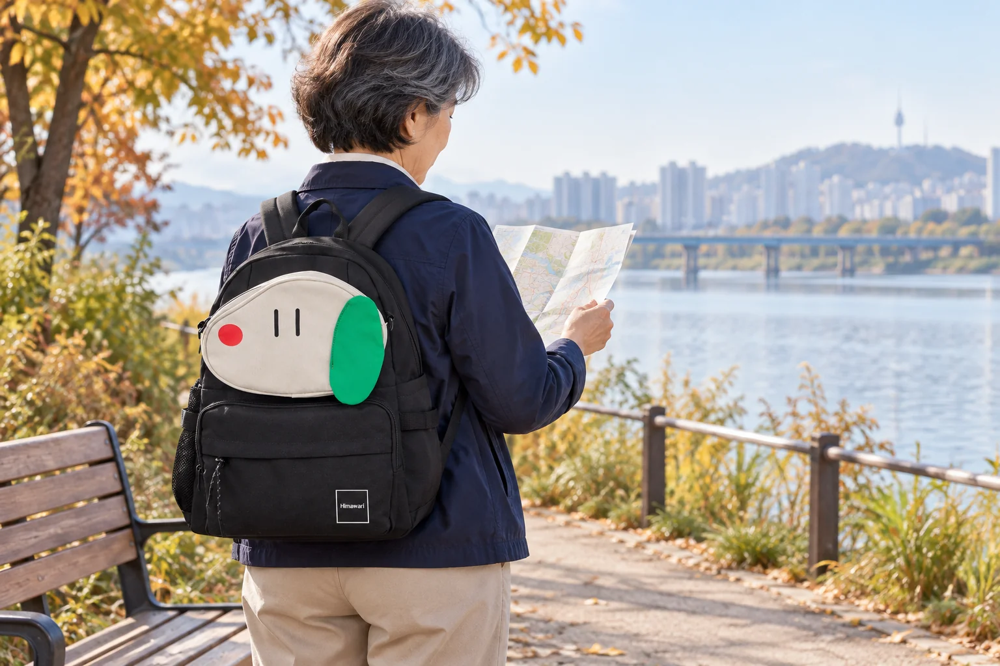
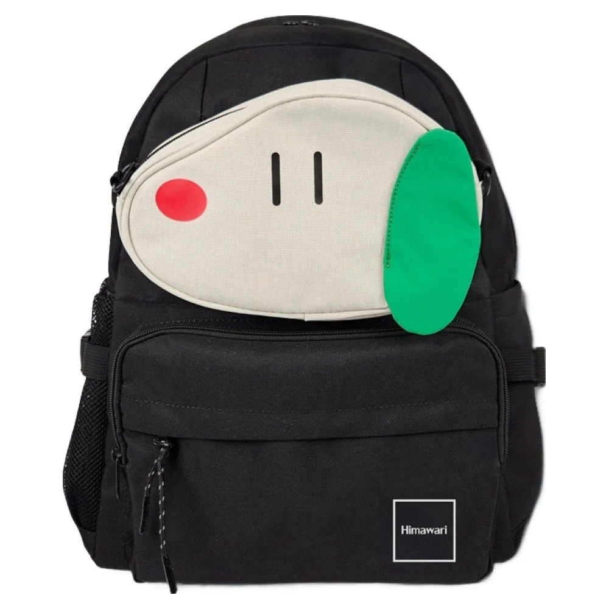

종이 지도를 보는 산책 백팩, 멈출 때 꺼내고 접어 넣는 자리

종이 지도를 따라 걷는 날에는 가방을 열어 지도를 꺼내고, 잠시 펼쳐 본 뒤 다시 담는 일이 반복됩니다. 출발할 때 지도 한 장이 들어갔다는 확인만으로 이 동작이 편해지는 것은 아닙니다. 접힌 종이를 큰 짐 사이에 끼웠다면 다음에 꺼낼 때 가장자리를 찾기 어려울 수 있습니다. 산책용 백팩에서는 길을 확인할 종이가 어떤 묶음으로 돌아오는지 생각해봅니다.
지도를 사용하는 보관품이 있다면 그 상태를 포함한 외형을 봅니다. 펼친 지도의 크기보다 접어 넣는 묶음의 크기가 가방과 비교할 대상입니다. 접을 수 있는 범위는 지도와 보관품에 맞춰 정하고, 입구에 맞추려고 매번 새로운 방향으로 강하게 구기지 않습니다. 자주 볼 면을 남기는 방법과 가방에 들어갈 방향을 함께 정하면 꺼낸 뒤 종이를 다룰 범위도 읽힙니다.
멈춘 자리에서 어느 입구를 열까
산책 중 지도를 볼 때는 통행을 방해하지 않고 잠깐 머무를 수 있는 자리를 고릅니다. 백팩을 받칠 곳이 있는지 보고, 지도 묶음을 꺼낼 때 가방을 어떻게 다룰지 생각합니다. 뒤쪽으로 손을 뻗어 지퍼를 더듬어야 한다면 가방을 앞으로 옮기거나 내려놓는 흐름을 택할 수 있습니다. 걷는 동안 종이를 꺼내는 속도보다 멈춘 자리에서 소지품을 정리할 순서가 먼저입니다.
집에서는 실제 산책 짐을 넣고 가방을 멘 뒤 내려놓아 봅니다. 지갑이나 물병을 옮기지 않고 지도 슬리브를 잡을 수 있는지 확인합니다. 가방을 바닥에 세워 두는 방향과 벤치 위에 놓는 방향에서 접근이 다른지도 볼 수 있습니다. 지도만 손에 남기고 나머지 짐은 가방 안에 유지할 수 있는 구성을 고르면 작은 휴식마다 펼칠 물건의 수가 줄어듭니다.
지도를 바깥쪽의 작은 공간에 둘 계획이라면 슬리브가 지나갈 입구와 닫히는 여밈을 함께 봅니다. 종이 끝이 밖에 남는 상태로 사용을 마치지 않습니다. 안쪽에 둘 계획이면 책이나 겉옷을 꺼낼 때 지도 묶음이 같이 움직이는지 확인합니다. 접근하기 쉬운 위치는 포켓의 이름보다 지도와 주변 짐을 어떤 순서로 다루는지에서 드러납니다.
지도를 펼친 뒤 가방에 남길 여유
지도를 꺼낸 동안 그 위치에 다른 물건을 넣지 않으면 다시 담는 동작을 유지하기 쉽습니다. 산책 중 벗은 겉옷을 넣었다면 원래 지도 자리까지 차지하는지 봅니다. 지도는 얇아서 남는 틈에 다시 들어갈 듯해도 잡을 면이 사라지면 다음 확인이 번거로울 수 있습니다. 겉옷은 닫힌 지도 묶음을 함께 넣은 상태에서 놓일 방향을 새로 정합니다.
펼친 지도를 다시 넣을 때에는 보관품에 맞는 상태로 정리한 뒤 슬리브나 파일을 닫습니다. 종이를 접으면서 가방 끈까지 동시에 잡고 있어야 한다면 잠시 받칠 면을 찾습니다. 작은 동작을 한 번에 끝내려다 다른 소지품을 바깥에 놓는 일이 생기는지 봅니다. 지도 묶음이 닫힌 뒤 백팩으로 돌아오는 순서를 정하면 가방 입구를 종이 작업대처럼 쓰지 않아도 됩니다.
Himawari No.0423 그린의 외부 크기는 32 × 42 × 13cm로 안내되어 있습니다. 산책 가방으로 살펴볼 때에는 이 바깥 규모와 자신의 지도 보관품을 나란히 비교합니다. 실제로 슬리브가 놓일 내부 공간과 입구는 별도로 확인합니다. 지도를 담은 상태에서 평소 소지품을 더하고 가방을 내려 열어보면 어느 위치에 손이 들어가야 하는지 구체적으로 볼 수 있습니다.

지도와 함께 쓰는 필기구가 있다면 필통이나 정한 묶음에서 꺼낼 수 있습니다. 지도 한 장을 보려고 필통 전체를 펼칠 필요가 있는지도 생각해봅니다. 반대로 필기구를 꺼내는 일이 거의 없다면 지도 옆의 자리를 반드시 비워둘 이유는 없을 수 있습니다. 실제로 함께 사용하는 범위에 맞춰 소품의 위치를 정하면 됩니다.
여러 번 연 가방을 다시 메는 순간
지도를 확인한 뒤에는 슬리브가 원래 위치에 들어갔는지 보고 여밈을 닫습니다. 손에 휴대전화나 음료가 남아 있다면 어느 것을 먼저 정리할지 순서를 나눕니다. 다시 걸을 때 백팩 끈이 지퍼 장식이나 지도 보관품의 손잡이와 겹치지 않는지도 확인합니다. 가방을 반복해서 여닫는 날에는 내려놓기 전보다 다시 멜 때의 모양이 조금씩 달라질 수 있습니다.
다음번에 지도를 꺼낼 때 전보다 찾기 어렵다면 그 사이 무엇을 넣었는지 살펴봅니다. 구매한 간식이나 받은 안내지를 지도와 같은 위치에 둔 경우라면 종이 묶음이 서로 섞일 수 있습니다. 지도와 새 자료를 어느 보관품에 둘지 나누면 한 번의 산책 안에서도 위치를 유지하기 쉽습니다. 같은 종이여도 사용하는 시점이 다르면 가방 속 역할도 달라집니다.
벤치에 앉아 쉬는 동안 지도 묶음을 밖에 두었다면 이동 전 그 자리를 회수 범위에 넣습니다. 가방 안의 물건 수만 생각하기보다 지도와 사용한 소품이 각각 어디에 있는지 봅니다. 지도를 계속 손에 들고 갈 계획이라면 그 상태를 알아두고 백팩의 빈자리를 그대로 유지할 수 있습니다. 나중에 다시 담을 때 다른 짐을 새로 꺼내지 않아도 되도록 하는 준비입니다.
귀가 후에는 지도 보관품을 꺼내 보관할 자리로 옮깁니다. 산책에서만 쓴 물건이 다음 출근 가방에 그대로 남지 않도록 필요한 묶음을 나눕니다. 지도에 남긴 기록과 가방 안의 배치를 정리하는 일도 분리할 수 있습니다. 다음 산책에는 어느 입구를 열었을 때 손이 편했는지, 어떤 물건이 지도 앞을 막았는지만 참고해도 됩니다.
같은 백팩으로 산책하더라도 그날의 겉옷과 물병, 소지품이 달라지면 지도 위치를 다시 볼 수 있습니다. 가장 빠르게 꺼낼 한 지점을 고정하기보다 잠깐 멈추고 종이를 펼친 뒤 다시 담는 동작을 해봅니다. 지도가 닫힌 묶음으로 돌아갈 자리가 남고, 가방을 다시 멜 때 손에 남을 물건이 정해져 있으면 길을 확인하는 시간과 걷는 시간이 자연스럽게 이어집니다.